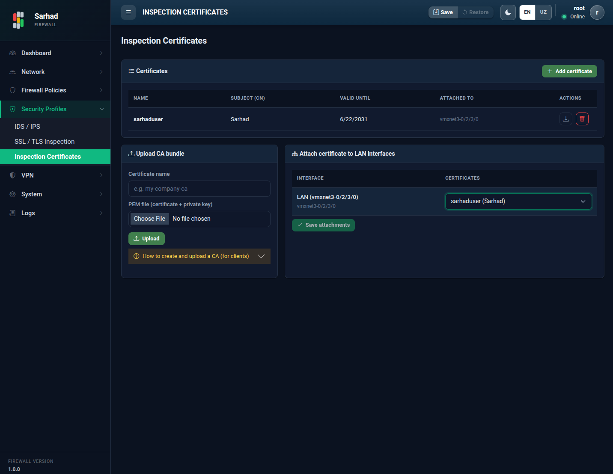

3. Tekshiruv sertifikatlari (Inspection Certificates)
Bu sahifa TLS trafigini tekshirish (TLS trafigini tekshirish (TLS Interception)) uchun
ishlatiladigan CA sertifikatlarini boshqaradi. Sertifikat yaratiladi (yoki
yuklanadi) va LAN interfeyslariga biriktiriladi (attach). Bu bo’limga o’tish
uchun chap menyudan Security → Inspection Certificates bo’limini tanlang
(/certificates).
{kind=link}

3.1. Asosiy tushunchalar
CA (Certificate Authority) — sertifikat beruvchi markaz. CA boshqa sertifikatlarni imzolaydi va ularning haqiqiyligini kafolatlaydi.
CRL (Certificate Revocation List) — bekor qilingan sertifikatlar ro’yxati.
Note
VPN ulanishlari uchun CA va server/mijoz sertifikatlari alohida sahifada boshqariladi (qarang: Sertifikat markazlari (PKI / Authorities)).
Sertifikatlar ro’yxatida har biri uchun Name (nom), Subject (CN), Valid until (amal qilish muddati) va Attached to (qaysi interfeyslarga biriktirilgani) ko’rsatiladi.
3.2. 1-qadam: Sertifikat yaratish yoki yuklash
Add certificate tugmasini bosing. Sertifikatni ikki usulda olish mumkin:
Yangi CA yaratish (Generate) — tizim yangi CA sertifikatini o’zi yaratadi.
Mavjud CA’ni yuklash (Upload CA bundle) — tayyor sertifikatni yuklang:
Certificate name — sertifikatga nom bering.
PEM file — PEM formatidagi sertifikat faylini tanlang.
Upload tugmasini bosing.

3.3. 2-qadam: Sertifikatni interfeyslarga biriktirish (Attach)
Sertifikat yaratilgandan so’ng uni tekshiriladigan LAN interfeyslariga biriktirish kerak. Attach certificate to LAN interfaces bo’limida:
Interface — sertifikat biriktiriladigan interfeysni tanlang.
Certificate — biriktiriladigan sertifikatni tanlang.
Biriktirishni tasdiqlang.
Biriktirilgan interfeyslar ro’yxatdagi Attached to ustunida ko’rinadi. Endi shu interfeyslardan o’tuvchi TLS trafigi tekshiriladi.
3.4. 3-qadam: CA’ni mijoz qurilmalariga o’rnatish
Tekshiruv ishlashi uchun CA sertifikatining ochiq qismini (faqat ommaviy sertifikat, maxfiy kalitni emas) barcha mijoz qurilmalariga ishonchli (trusted) sifatida o’rnating. Aks holda foydalanuvchilar brauzerda sertifikat xatoliklarini ko’radi.